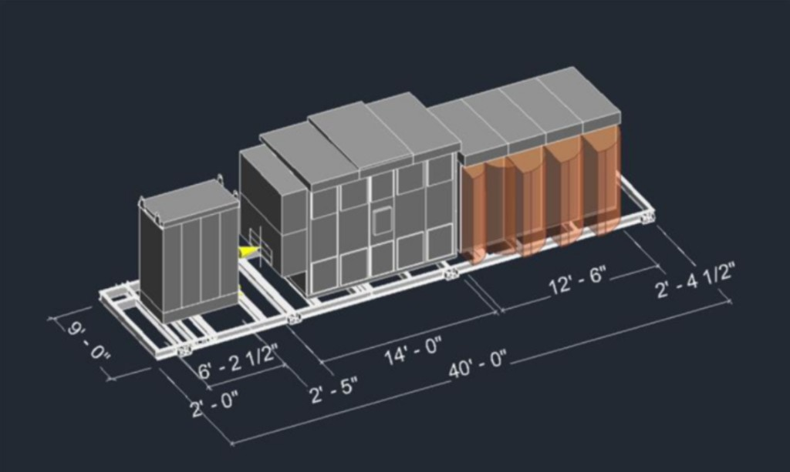
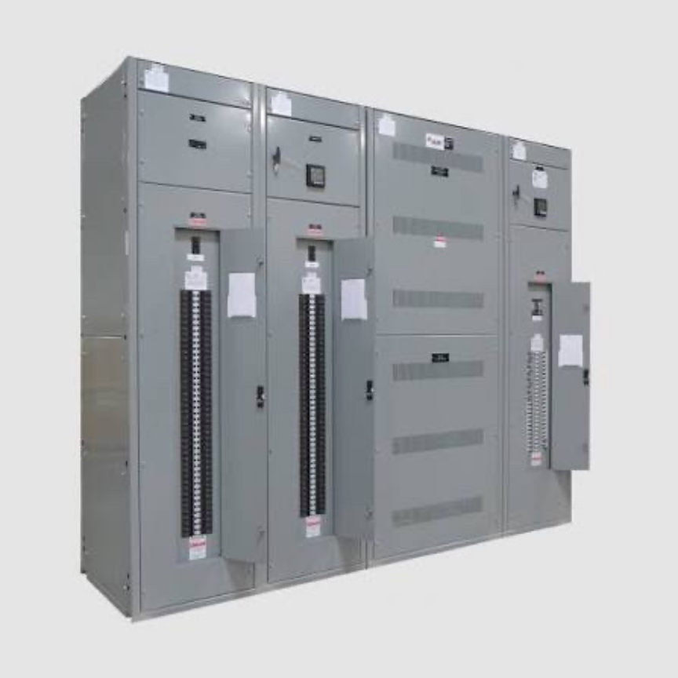
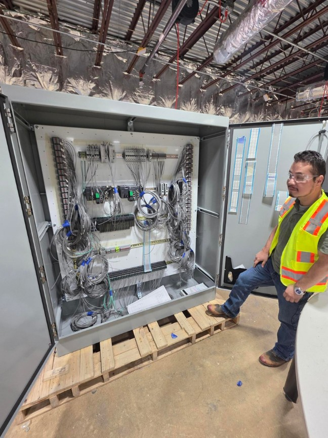

Consolidate disconnected work before deployment.

Integrated Skid Solutions
Built Together. Delivered Ready.
5K Power provides integrated manufacturing, assembly, testing, and deployment support for mission-critical electrical skid systems.
Mission-critical integration
Move Complexity Off the Jobsite.
Electrical skids bring multiple systems, manufacturers, trades, and technical requirements together. Coordinating that work in the field can create additional labor, scheduling, quality, and logistics challenges.
5K Power provides a more integrated approach, bringing equipment into a controlled production environment where systems can be received, positioned, assembled, connected, inspected, tested, documented, and prepared for deployment.

Skid applications
Built Around the Equipment.
Our integration capabilities support a range of mission-critical power assemblies.
- RMU
- PDC and PDMC
- MSS and USS
- Temporary power systems
- Generators
- Project-specific power assemblies
From equipment receipt through final setting
One Integrated Scope.
- Receipt and management of owner-furnished equipment
- Equipment placement and assembly
- Integral electrical connections
- QA/QC inspections and documentation
- Commissioning, NETCAB, and NETA testing coordination
- Logistics, delivery, and final setting

Built in a controlled environment
More Control Before It Reaches the Field.
Moving integration work into a controlled manufacturing environment supports greater consistency, improved documentation, organized sequencing, and clearer production accountability.
Each project can be coordinated around defined technical requirements, testing needs, and delivery milestones before deployment.
Less field complexity
Arrive More Ready.
Integrated skid solutions can help reduce the amount of assembly and coordination required after equipment reaches the jobsite.
Track production against defined milestones.
Organize documentation and verification needs.
Align logistics and setting with project needs.
Engineered to perform. Built to last.